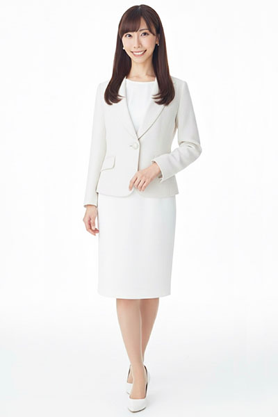
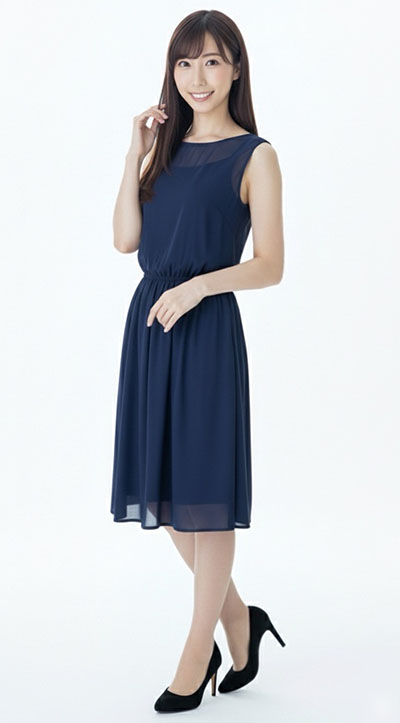
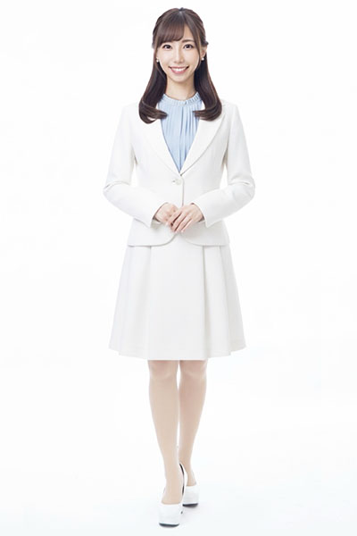

PROFILE
真波 凛





真波 凛Rin Manami
| カテゴリ | MC/司会、コンパニオン |
|---|---|
| 言語 | バイリンガル英語 |
| 地域 | 関東 |
| 身長 | 158cm |
| 趣味 | 映画、アニメ |
| 特技 | ダンス、絵 |
| 資格 | 英検2級
書道二段 |
| 参考URL | |
| 音声サンプル | |
| SNS |
経歴
【WEB】
- エー・ビー・シー開発株式会社モデルルーム紹介映像リポーター
【展示会】
- ものづくりワールド/ベリサーブ
- AWS Summit/野村総合研究所
- OTOTEN2026/JVCケンウッド
- JECAフェア/SFCC
- JPCA Show2026/オーク製作所
- Japan IT week 2026/OPSWAT
- InterBEE2025/NEC
- 東京おもちゃショー2025/タカラトミー
- スポルテック2025/ゴルフナビ
- 第23回総務・人事・経理Week/ミドリ安全
- NHK技研公開2025
- 国際建設・測量展（CSPI-EXPO2025）/アイサンテクノロジー
- FOOMA JAPAN/ツカサ工業
- 健康博覧会2025/セミナー会場
- リテールテック2025,2026/NCR
- インターナショナルボートショー2025/ワイズギア（フィッシングアドバイザー佐々木修、GARMINアドバイザー松木大輔）
- 健康博覧会2024/セミナー会場
- Care Show Japan 2024/セミナー会場
- docomo Open House '24/FEEL TECHミニステージプレゼン
- JAPAN MOBILITY SHOW2023/DENSOブースプレスカンファレンス
- 再生医療JAPAN/日立製作所
- フジタ技術フェア2020～2025
- 日本ものづくりワールド/セールスフォース
- InteropTokyo2023/JamfジャパンMCCO
- EDIX2023/アルファコードMCCO
- IT WEEK春2023/アルファコードMCCO
- リテールテック2023/NCR
- エコプロ2022/日本製鉄
- オルガテック東京2022/富士ビジネス
- 東京ゲームショウ/AVerMedia MCCO
- Page2020/J SPILIT MCCO
【イベント】
- 日新堂銀座本店リニューアルオープンイベント（皆藤愛子）
- 東京アスレチックドギーズ2026水元カニクロスレースMC
- 千葉アスレチックドギーズ2026レースMC
- ドッグマラソン2025 東京カニクロス2.0
- Pontaパスstationトークショー＆ライブ（FRUITS ZIPPER、SWEET STEADY、CANDY TUNE、ICEx、赤荻瞳）
- LEGO×ワンピースコラボイベントキャラバン
- デザインパーク×キユーピーinららぽーと/ワークショップ
- Silver Stone EXPO2023
- たまひよファミリーパーク2023/AQUAデモンストレーションMCCO
- 鉄道開業150年記念 鉄道博物館プレミアムイベント
- 第23回建築ふれあいフェア2022/バルーンアートやクイズ大会
- 日産ビジネスカレッジ
- 第4回埼玉輸入車ショー2019
- SHARPフェア
- Dyson タッチ＆トライイベント
- ユニバーサルカーニバル＆サミーフェスティバル2017 MCCO
- 統一地方選挙ウグイス嬢
- 住友不動産新築そっくりさんリフォームイベント 影ナレ
- auイベント
【式典】
- 富士河口湖グランピング式典
- OPSWATパートナーレセプション
【トークショー】
- 皆藤愛子
- FRUITS ZIPPER
- SWEET STEADY
- CANDY TUNE
- ICEx
- 渋谷女子インターナショナルスクール校長 赤荻瞳
- フィッシングアドバイザー佐々木修
- GARMINアドバイザー松木大輔
【セミナー】
- Zoom Experience Day ～Beyond Meetings ビデオ会議の先へ～
- 日経プレミアム・カンファレンス・シリーズ 影ナレ
- サイトコアセミナー
- 大塚商会未来創造フェア/セミナー
- Zuken Innovation World 2025
- SAP Concur Fusion Exchange 2025 Tokyo
- Arm Unlocked
- アサヒスーパードライ30周年セミナー
- 人工関節学会
- 健康博覧会2025/セミナー会場
- 健康博覧会2024/セミナー会場
- Care Show Japan 2024/セミナー会場
【英語コンパニオン】
- Factory Innovation Week 2026/パナソニック環境エンジニアリング株式会社
- クランチロールアニメアワード2025 英語ステージアテンド
- にじさんじ 7th Anniversary Festival
- インターナショナルギフトショー2025/CORKCICLE
- インターフェックス2024/TOSTE
- CPHI Japan2024/Jubilant
- TRANOI TOKYO 2024
- インテル・マイアミVSヴィッセル神戸
- スマート工場EXPO/Guide Robotics
- Google Cloud Next`23 in Tokyo
- 国際ロボット展2023/カワダロボティクス
- PROJECT TOKYO 2023 September
- FOOMA JAPAN2023/東陽機械製作所
- オルガテック東京2023/イトーキ
- Azure Tech Days for Rakuten
- IGAS2022/小森コーポレーション
- Embraer day conference
- ツーリズムEXPO/カタール航空
- CEATEC2022/NEC
- IIW(国際溶接会議)2022
- FOOMA JAPAN2022/椿本チェイン
- システムコントロールフェア2017/ヒルシャー
- ITEM2018,2022,2023/東洋メディック
- 人とくるまのテクノロジー展2019 インフォメーション
- X-HUB TOKYOイベント
- ラグビーワールドカップ/パブリックビューイング会場インフォメーション
【ステージアテンド】
- TQエクセレントクラブ式典
- イクメン・イクボスアワード
- その他テープカットアテンド多数